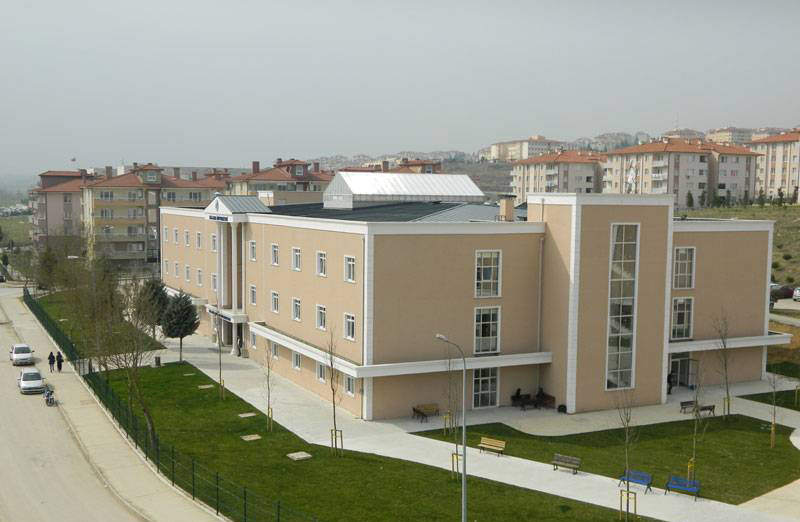
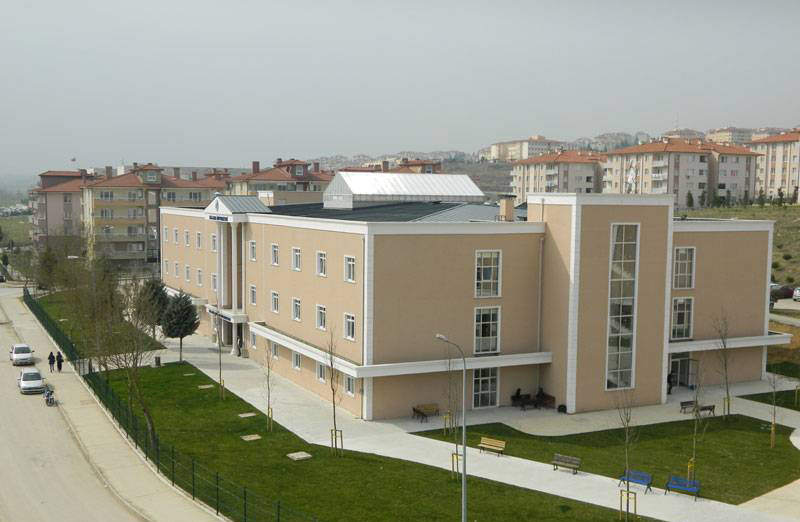
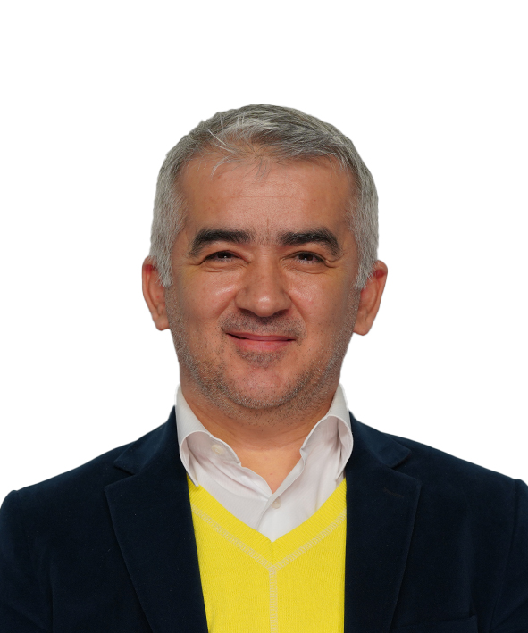

Hoşgeldiniz
1970 li yıllarda İstanbul Teknik Üniversitesi tarafından kullanılan binada hala eğitim öğretime devam
etmekteyiz. O yıllarda mühendislik fakültesi olarak kullanılan binamızda verilen eğitimler hem bölgede hem
de ülkede ses getiren çalışmaların alt yapısını oluşturmaktadır.
Sitemiz 20.03.2014 tarihinde İnternet Programcılığı dersinde tasarlanmıştır. Amacımız, Sakarya Üniversitesi,
Sakarya Meslek Yüksekokulu biriminde bulunan Bilgisayar Programcılığı Programını tanıtmaktır.
Mümkün olduğunca güncel bilgiler vermek istediğimiz için sitemiz gerek görünüm gerekse de içerik olarak sık
sık değişikliğe uğrayacaktır.
Bilgisayar Programcılığı, daha çok bilgisayar programcısı yetiştirmeyi amaçlamasına rağmen, 2012 yılından
itibaren de tasarım yönünü güçlendirmeye çalışmaktadır.
Bölüm mezunlarımız dikey geçiş, mesleğe başlama, bir iş yeri kurma gibi avantajlara sahip olmaktadırlar.
 

Bölüm Hakkında
Bölüm, 1999 yılında kurulmuştur. Günümüze kadar toplamda 214 öğrenci bölümden mezun olmuş durumdadır.
Mezunlarımızın %22 si dikey geçiş ile değişik fakültelere geçmişlerdir.
Bölümde şu anda beş akademisyen bulunmakta olup, Sakarya Meslek Yüksekokulunda 5 bilgisayar laboratuvarında
öğrenciler uygulama imkânı bulmaktadırlar.
Bölümde okutulan dersler uzman eğitimciler tarafından yapılan bir araştırma ile piyasaya uygunluğu %82 ile
Türkiye çapında yüksek bir orana kadar uzanmıştır.
Yapılan son çalışma ve projelerde özellikle Bilgisayar Programcılığı bölümünde okuyan öğrencilerin bir
akademi mezunu olabilmeleri için CISCO Akademi ile bazı protokol çalışmaları yapılmaktadır.
Derslerimizde HTML5, Jquery, JavaScript, Asp.Net Mvc, CodeIgniter ile PHP programlama, Mobil Programlama,
Bilgisayar Ağları ve Ağ Güvenliği, Görsel Programlama ağırlıklı derslerimizdir. Bunun yanında Bilgisayar
Donanımı, Kablosuz Teknolojiler, Bilgisayarlı Kontrol Uygulamaları, İşletim Sistemleri gibi derslerle
öğrencilerimiz desteklenmektedir.
Akademisyenler
Bölümde en önemli yapı taşlarından olan eğitmenler bakımından hem deneyim hemde bilgi birikimi açısından son
derece şanslı olan bir bölüm olarak kendimizi görebiliriz. Çünkü dört akademisyen okulumuzdaki pek az
bölümde olmakla birlikte akademisyenlerimizin özellikle özel sektör ve ders verme tecrübelerinin olması ayrı
bir kazanımdır.
 Doç. Dr. Serkan DERELİ;
Gazi Üniversitesi, Bilgisayar Sistemleri Öğretmenliği mezunu. Web ve Veritabanı derslerinde uzman.
Doç. Dr. Serkan DERELİ;
Gazi Üniversitesi, Bilgisayar Sistemleri Öğretmenliği mezunu. Web ve Veritabanı derslerinde uzman.
Öğr. Gör. Dr. İsmail ÖYLEK;
Selçuk Üniversitesi, Bilgisayar ve Öğretim Teknolojileri mezunu. Temel ve Görsel Programlama derslerinde
uzman.
Öğr. Gör. Dr. Özkan CANAY;
Sakarya Üniversitesi, Endüstri Mühendisliği mezunu. Bilgisayar ağları ve bilgi güvenliği konularında uzman.
 Dr. Öğr. Üyesi Ferda BOZKURT;
Gazi Üniversitesi, Bilgisayar Sistemleri Öğretmenliği mezunu. Web ve Veritabanı derslerinde uzman.
Dr. Öğr. Üyesi Ferda BOZKURT;
Gazi Üniversitesi, Bilgisayar Sistemleri Öğretmenliği mezunu. Web ve Veritabanı derslerinde uzman.
Öğr. Gör. Dr. Gözde GÖKPINAR;
Bilkent Üniversitesi, Bilgisayar ve İstatistik bölümü mezunu. Veri Yapıları ve Java programlama konularında
uzman.

Öğr. Gör. Hasan KAÇAMAK;
Sakarya Üniversitesi, Endüstri Mühendisliği mezunu. Veritabanı konusunda uzman.
Bölüm Dersleri
Okulumuzda 3+1 eğitim modeli uygulandığından dolayı piyasanın personellerde aradığı akademik bilgi ve becerileri kazandırmak zorunda olduğumuzdan dolayı genel anlamda piyasada kullanılan bilgileri kapsayan dersler bölümümüzde okutulmaktadır.
1. Yarıyıl
- Algoritma ve Programlamaya Giriş
- Bilgisayar Donanımı
- Ofis Yazılımları
- Grafik Tasarım
- Web Tasarım Temelleri
2. Yarıyıl
- Veritabanı Yönetim Sistemleri
- İnternet Programcılığı I
- Görsel Programlama I
- Veri Yapıları ve Programlama
- Bilgisayar Ağları
3. Yarıyıl
- Bilgisayarlı Kontrol Uygulamaları
- Mobil Programlama
- Görsel Programlama II
- İnternet Programcılığı II
- Bilgisayar Ağ Güvenliği